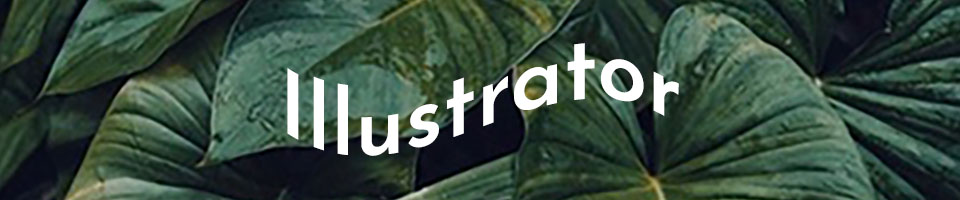
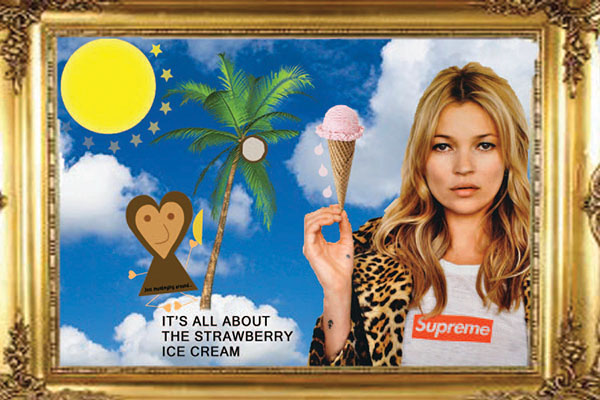

Home Pixels Vector Motion Print Contact
I incorporated my original Raster project as part of this. I first started to add little details such as the drips from the Strawberry ice cream and stars surrounding the sun. I decided to play around with the opacity and decrease it.